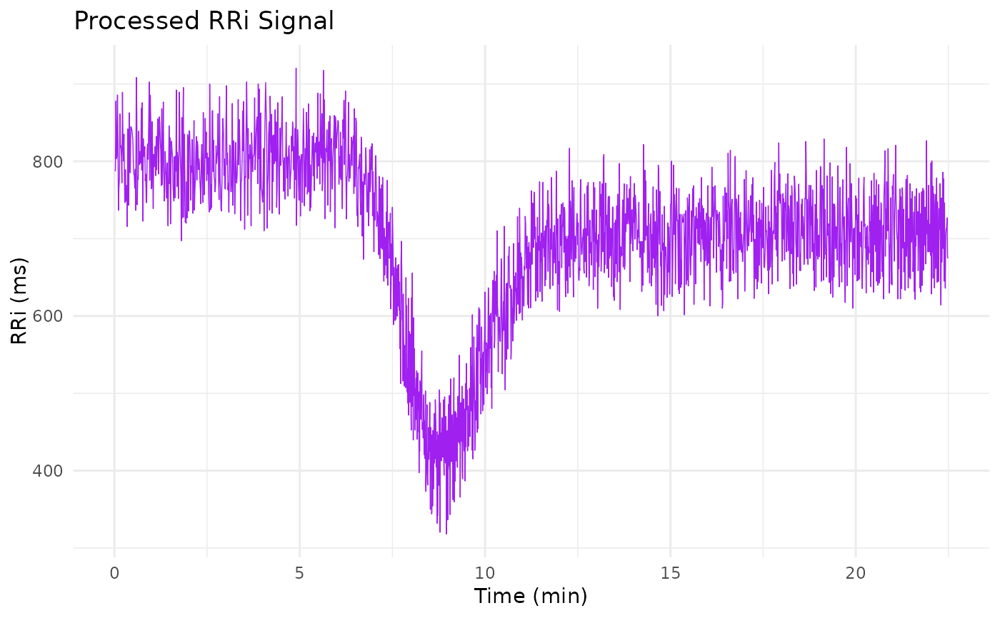

This function imports an RR interval (RRi) signal from a plain text file, where each line
contains one numeric RR interval (in milliseconds). The imported signal is preprocessed by
replacing non-realistic values (those below min or above max) with NA and then
removing them. Optionally, the function can remove ectopic beats using the clean_outlier() function,
and it can further filter the signal using filter_signal(). A time variable is computed as the cumulative
sum of the RR intervals (converted to minutes), and the processed data is returned as a data frame.
Usage
import_RRi_txt(
file = NULL,
remove_ectopic = TRUE,
filter_noise = FALSE,
min = 250,
max = 2000,
...
)Arguments
- file
A character string specifying the path to the text file containing the RRi signal.
- remove_ectopic
A logical value indicating whether to remove ectopic beats using the
clean_outlier()function. Default isTRUE.- filter_noise
A logical value indicating whether to apply a low-pass filter using
filter_signal()to the imported signal. Default isFALSE.- min
A numeric value specifying the minimum realistic RRi value (in milliseconds). Values below this are set to
NA. Default is250.- max
A numeric value specifying the maximum realistic RRi value (in milliseconds). Values above this are set to
NA. Default is2000.- ...
Additional arguments passed to
readLines().
Value
A data frame with two columns: time and RRi. The time column is computed as the
cumulative sum of the RRi values divided by 60000 (to convert to minutes), and RRi contains the cleaned signal.
Details
The expected data format is a text file with one RR interval per line, for example:
| [some-file.txt]: |
| 1312 |
| 788 |
| 878 |
| ... |
| 813 |
| 788 |
| 783 |
The function begins by checking that the input file is provided and that the options remove_ectopic
and filter_noise are logical values of length 1. It then reads the file using readLines(),
converts the readings to doubles, and replaces any values outside the realistic range (defined by min and max)
with NA. After removing missing values, the function optionally cleans the signal to remove ectopic beats
and applies a Butterworth low-pass filter if requested. Finally, it computes a time vector based on the cumulative sum of
the cleaned RRi signal and returns the result in a data frame.
Examples
temp_file <- tempfile(fileext = ".txt")
cat(sim_RRi$RRi_simulated,
file = temp_file,
sep = "\n")
sim_data <- import_RRi_txt(file = temp_file,
remove_ectopic = TRUE,
filter_noise = FALSE,
min = 250, max = 2000)
head(sim_data)
#> time RRi
#> 1 0.01312123 787.2738
#> 2 0.02625456 788.0000
#> 3 0.04088790 878.0000
#> 4 0.05428790 804.0000
#> 5 0.06772123 806.0000
#> 6 0.08248790 886.0000
library(ggplot2)
ggplot(sim_data, aes(time, RRi)) +
geom_line(linewidth = 1/4, col = "purple") +
labs(x = "Time (min)", y = "RRi (ms)",
title = "Processed RRi Signal") +
theme_minimal()
